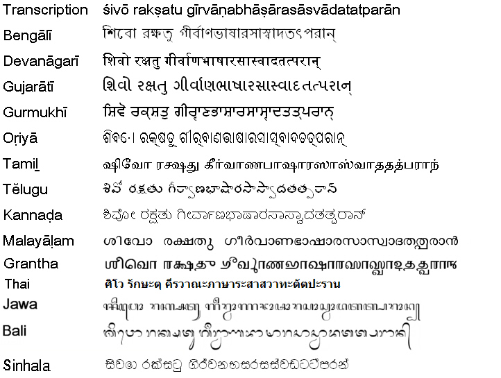
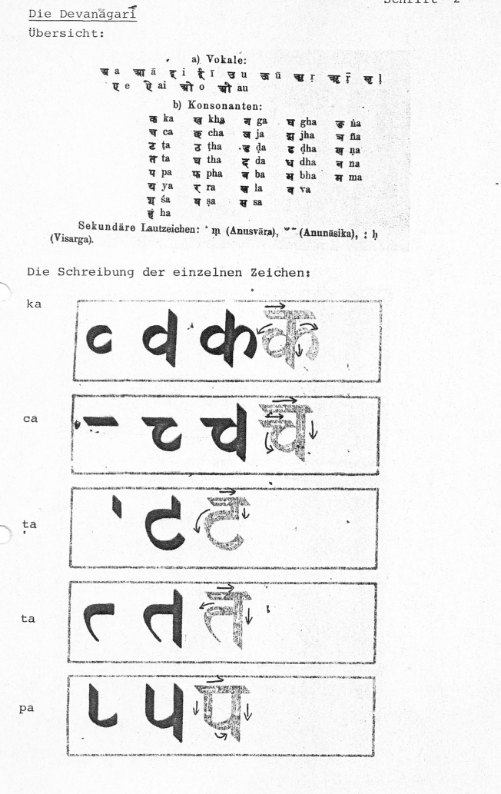
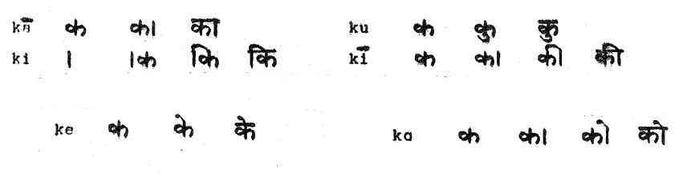

mailto:payer@payer.de
Zitierweise | cite as:
Payer, Alois <1944 - >: Sanskritkurs. -- Devanāgarī = देवनागरी. -- 1. Schriftübung 1. -- Fassung vom 2008-11-17. -- URL: http://www.payer.de/sanskritkurs/schrift01.htm
Erstmals hier publiziert: 2008-11-17
Anlass: Lehrveranstaltungen 1980 - 1984
©opyright: Dieser Text steht der Allgemeinheit zur Verfügung. Eine Verwertung in Publikationen, die über übliche Zitate hinausgeht, bedarf der ausdrücklichen Genehmigung des Verfassers
Dieser Text ist Teil der Abteilung Sanskrit von Tüpfli's Global Village Library
Falls Sie die diakritischen Zeichen nicht dargestellt bekommen, installieren Sie eine Schrift mit Diakritika wie z.B. Tahoma.
Die Devanāgarī-Zeichen sind in Unicode kodiert. Sie benötigen also eine Unicode-Devanāgarī-Schrift.
Sanskrit wurde und wird in einer Vielzahl von Schriften geschrieben. Folgende Übersicht gibt einen kleinen Ausschnitt aus diesen Schriften:

Die wichtigste moderne nordindische Sanskritschrift ist die Devanāgarī:

Jedes Konsonantenzeichen bezeichnet ein auf den Konsonanten folgendes "a" mit. Soll der reine Konsonant geschrieben werden (ohne nachfolgenden Vokal), muss man dies durch einen untergesetzten Schrägstrich -- virāma = विराम -- kennzeichnen:
क् = k, च् = c, ट् = ṭ, त् = t, प् = p
Auf einen Konsonanten folgende Vokale -- außer "a" -- werden so geschrieben:
का = kā, कि = ki, की = kī, कु = ku, कू = kū, कृ = kṛ, कॄ = kṝ, कॢ = kḷ
के = ke, कै = kai, को = ko, कौ = kau
Die Reihenfolge beim Schreiben dieser Verbindungen von Konsonant + Vokal ist:

Beim Schreiben wird jeder Buchstabe inklusive Querstrich an Oberlinie vollendet bevor der nächste Buchstabe geschrieben wird.
Schreiben Sie in Devanāgarī:
kaka kāka kapa kapi kaṭa kuṭi tap tac cāpa kṛta caita cūta pat pitā pīta puta cātu cāti ṭīkā ṭāka ṭoṭa tepa tṛta kḷp kopa kaupa poka peta tṝ pṝ pṛc pat pati capeṭā
Lesen und transliterieren Sie:
तॄ पाप चट् चि चाप पॄ पति पितृ कॢप् कृ कुप् कुतो चैक पुट पचति तौ पू चेत् पतति ततो तट तपति तु ते कृ पीतौ
Zusätzliche Leseübung:
पिता Vater, कपि Affe, कृत getan, टीका Subkommentar, तत् dieses, तट Ufer, पत् dahinschießen, पट Gewebe, काच Glas, काकुत् Gaumen, चित् wahrnehmen, पृच् mischen, पोटक Knecht, चेतु Absicht, तौतातित Anhänger des Kumārila (Mīmāṃsā), तूत Maulbeerbaum, पीत getrunken, पीति Trank, कॢप् passen, कृपते er jammert, पुटी Falte, चापि desgleichen, तोक Nachkommenschaft, तृपत् satt, पॄ füllen, कृकाटी Halsgelenk, पूपौ zwei Kuchen, पैतृकी väterlich (fem.), कौट betrügerisch, कच Haupthaar, कुतपे auf der Ziegenhaardecke, कुचौ Busen, चकिता erschrocken (fem.)
Zu Lektion 2